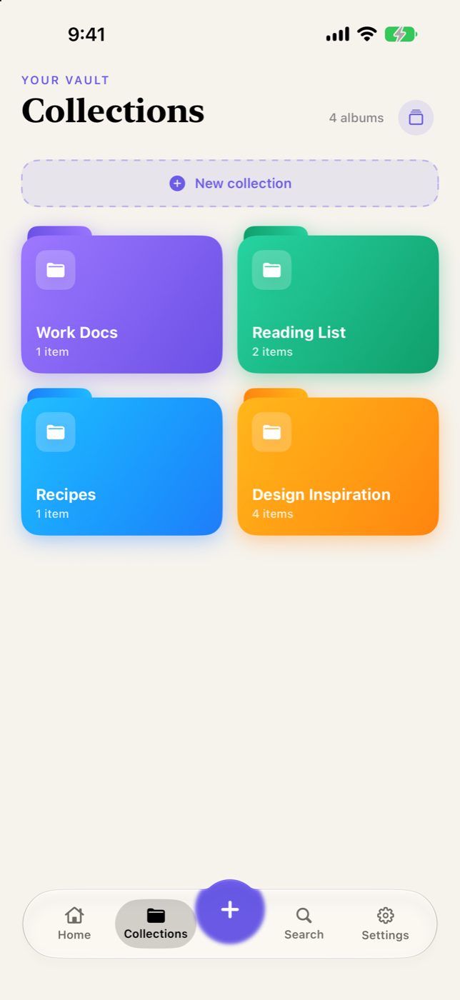
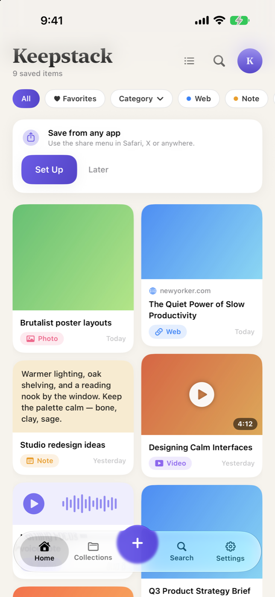
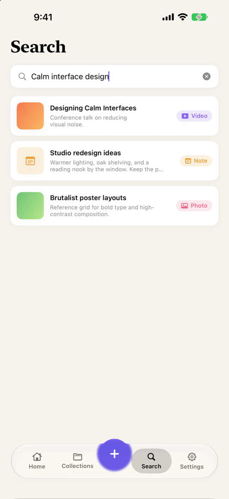

Save it now.
Find it by meaning.
Keepstack keeps links, notes, screenshots, photos, videos, voice memos and PDFs in one private stack — and on-device AI reads, tags and summarizes them so you can actually find them again.
Free to use · Optional Pro · No account, ever



Features
A memory for the things you save
Saving is easy. Finding it again three weeks later is the hard part — that is the part Keepstack is built for.
Save from anywhere
Share from Safari, social apps or Photos straight into your stack. Saved pages keep their title, preview image and full text.
On-device AI
Reads the text inside screenshots, writes key-point summaries and sorts saves into smart categories — all on your iPhone.
Search by meaning
“That pasta sauce” finds the recipe even when those words aren’t in it. Your saves show up in iPhone Spotlight too.
Collections & categories
Group saves into collections — Recipes, Travel, Finance, Tech or your own. One item can live in several at once.
Six kinds of save
Web links, notes, photos & screenshots, videos, voice memos and PDFs — one stack, not six scattered apps.
Private by design
No account, no sign-up, no tracking, no ads. Saves stay on your device — or sync privately through your own iCloud.
How it works
Three taps, then forget about it
Share it in
Hit Share in any app and pick Keepstack — or capture a note, photo, voice memo or PDF directly inside the app.
It reads itself
Keepstack pulls the page text, runs OCR over screenshots, writes a summary and suggests tags and a category. On device.
Find it later
Search by what it meant, not the exact words. Browse by collection, kind or date — or set a reminder to come back to it.
Your stack is nobody else’s business
No account. No analytics. No advertising SDKs. No server of ours ever receives what you save. The AI that reads your screenshots runs on your iPhone, using Apple’s own frameworks — nothing is sent to an AI service.
Read the privacy policyPricing
Free to use. Pro when you outgrow it.
Every save you make is yours to keep. Pro lifts the limit and switches on the heavier on-device intelligence.
Free
- Up to 50 saves
- All six content types
- Collections, search and reminders
- Share extension and Spotlight
Keepstack Pro
- Unlimited saves
- Search by meaning
- Text recognition in screenshots and scans
- Automatic tags and summaries
Prices in USD and may vary by region. Subscriptions renew automatically unless cancelled at least 24 hours before the period ends. Manage or cancel anytime in your Apple Account settings. Terms of Use · Privacy Policy
Questions
Good to know
Do I need an account?
No. There is no sign-up and no login anywhere in Keepstack. Open the app and start saving.
Where is my data kept?
On your iPhone. If you switch on iCloud Sync, your saves also sync through your own private iCloud account so they appear on your other devices — that stays between you and Apple. We run no server.
Does the AI send my saves anywhere?
No. Text recognition, summaries, tagging and semantic search all run on your device using Apple’s Vision and Natural Language frameworks.
What happens to my saves if I stop paying for Pro?
Nothing is deleted. Saves past the free limit are locked rather than removed, and unlock again the moment you resubscribe.
Which iPhone do I need?
Keepstack runs on iOS 17 and later.
Start your stack
Free on the App Store. No account, no tracking.